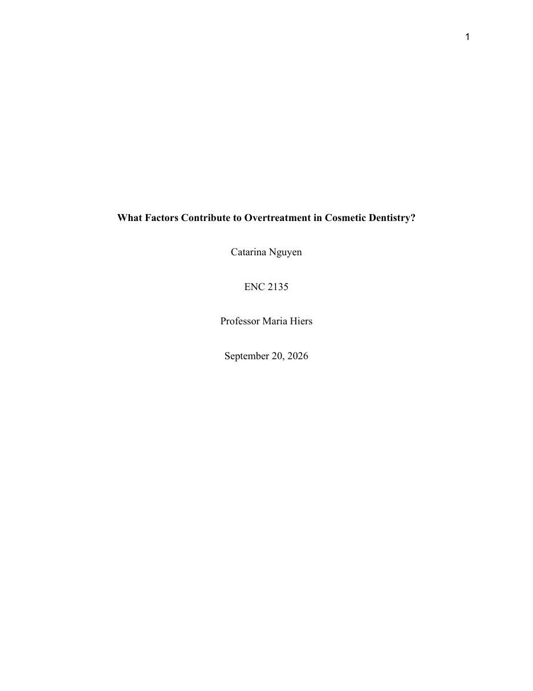
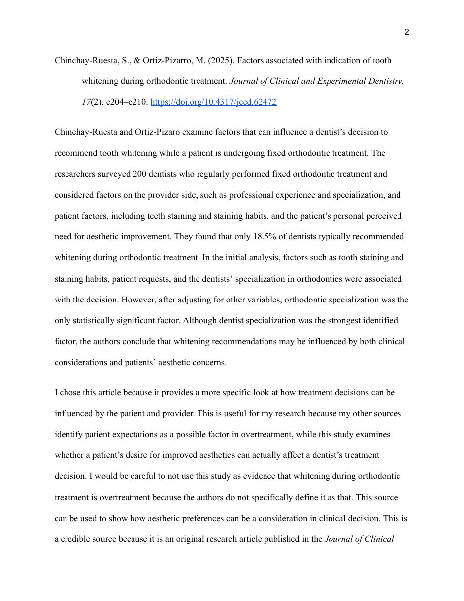
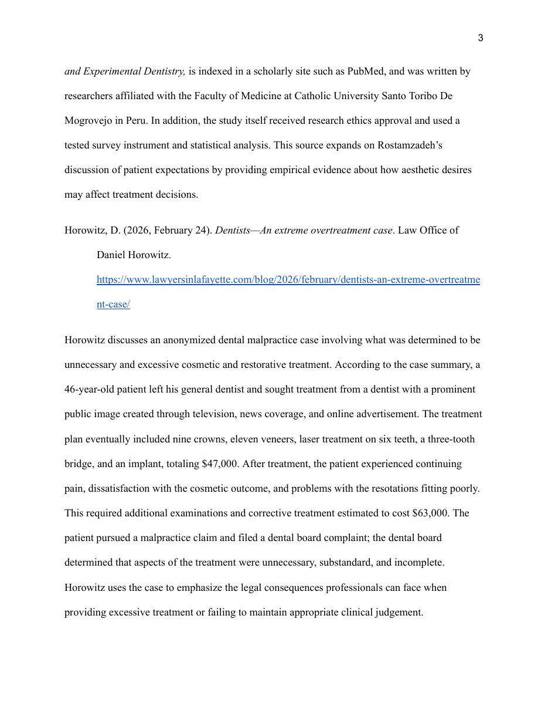
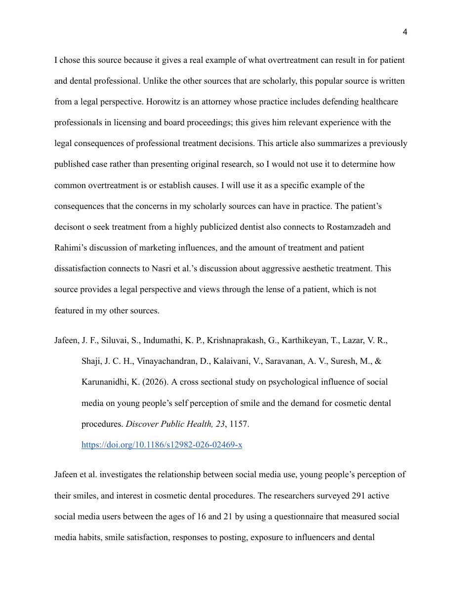
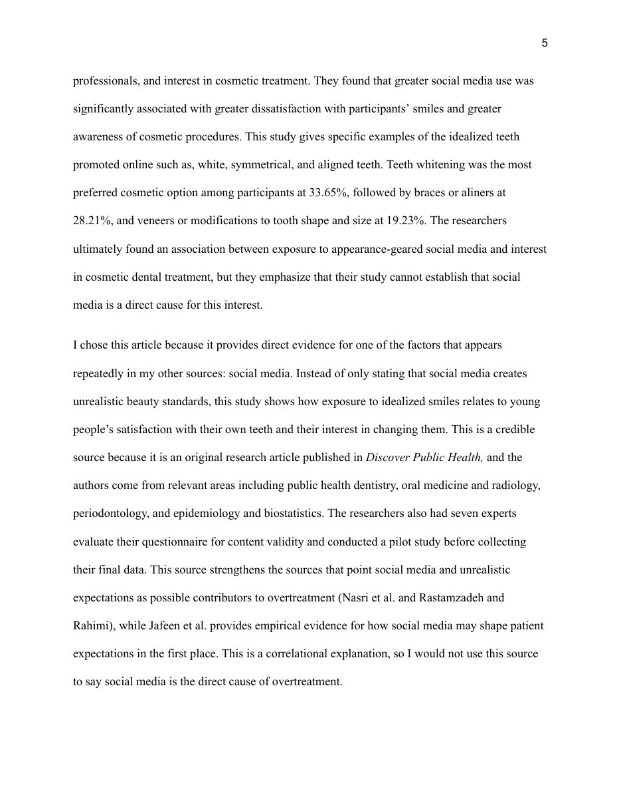
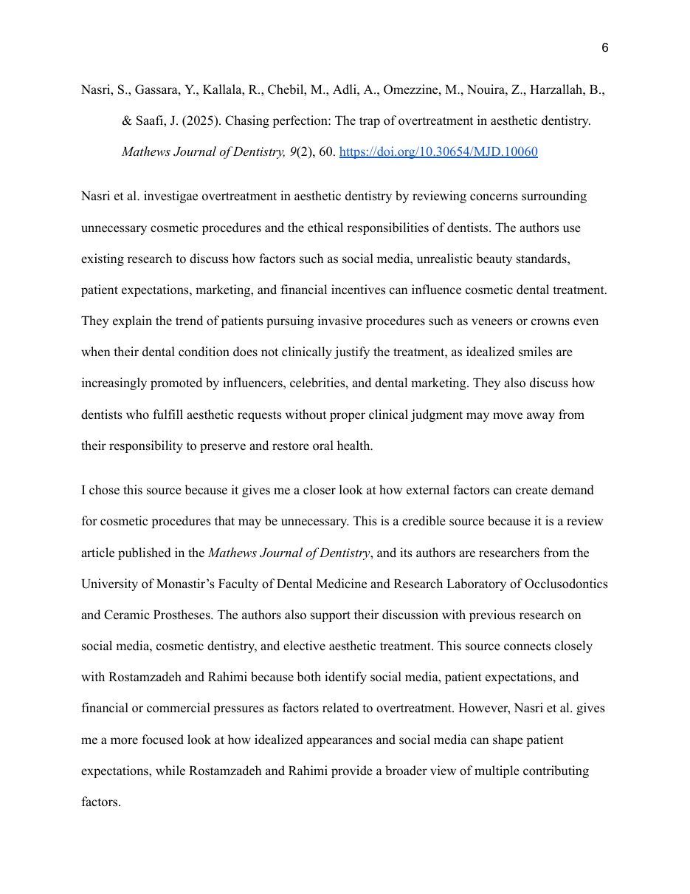
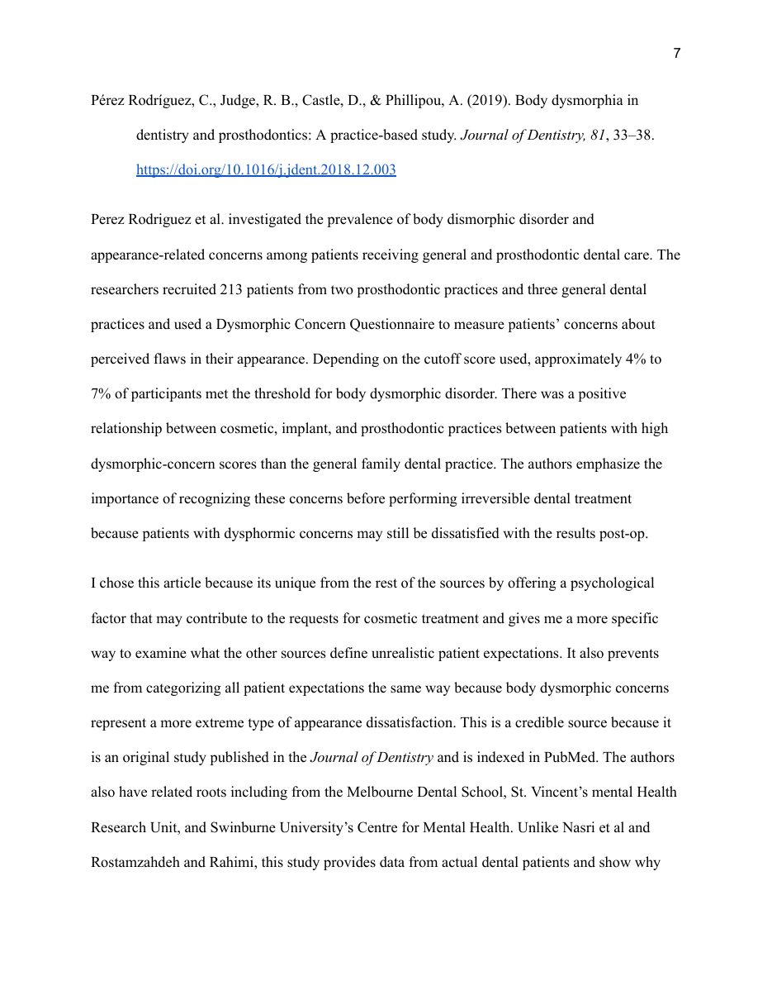
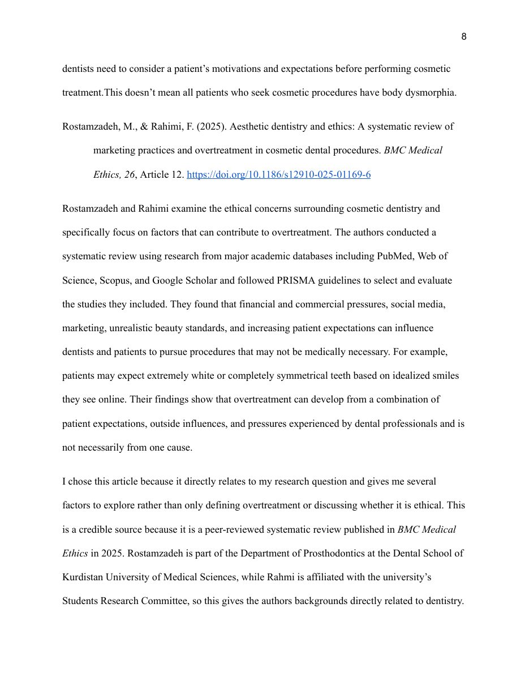
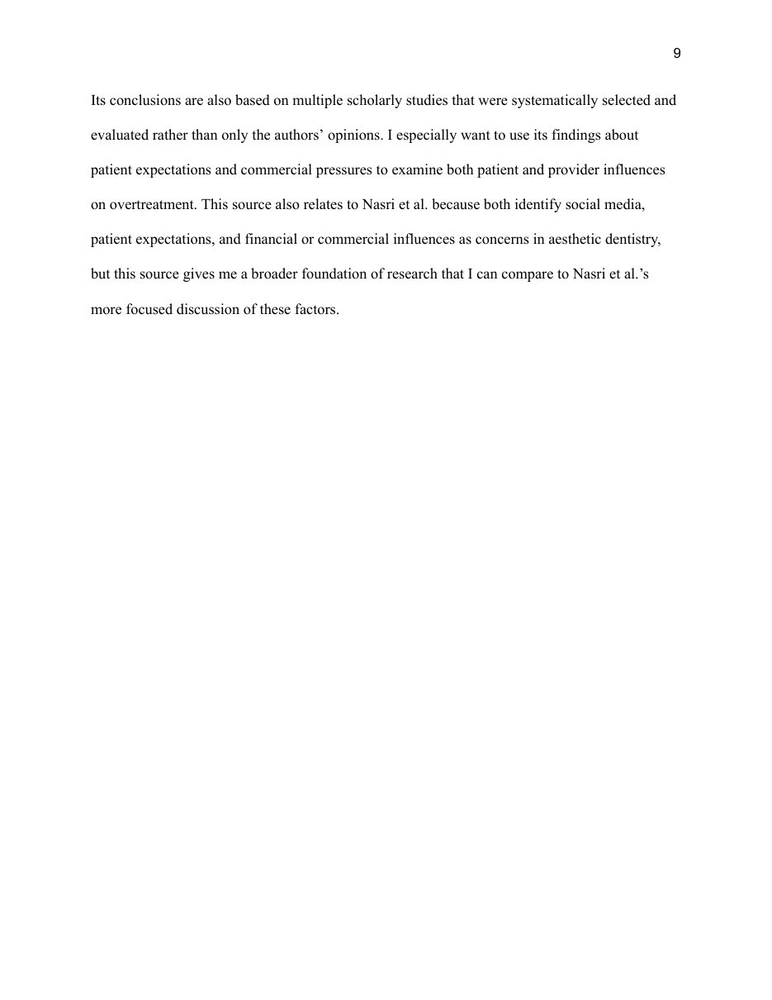

Artifact 1: Annotated Bibliography









The annotated bibliography I wrote for Project 1 in September. It covers six sources in APA format, from peer-reviewed studies to a lawyer's case summary, each with a summary and a paragraph on how I planned to use it.
Using sources. Writing each annotation made me explain what a source actually helped me understand, judge whether it was credible, and decide what it could and couldn't prove, like keeping a correlational study from being used as proof of cause.
Reading about social media and beauty standards changed my research question. I started looking at what shapes a patient's expectations before they ever walk into a dental office.